NIETE · Islamabad · quiz live since 6 September 2026 · on a web page since 7 October · data to 23:59 on 8 October
A teacher forwards one link to the class group, and the children take a quiz written from the lesson that teacher just taught. Until 6 October the quiz ran inside the WhatsApp chat, one message per step, about 46 for each finished quiz; on 1 October Meta began charging for every one of them. Since 7 October the same link opens a web page. Nothing is sent per question, and the page does what the chat could not: a voice for every question in English or Urdu, class and school leagues, a friend challenge, a video library and short reading and number games.
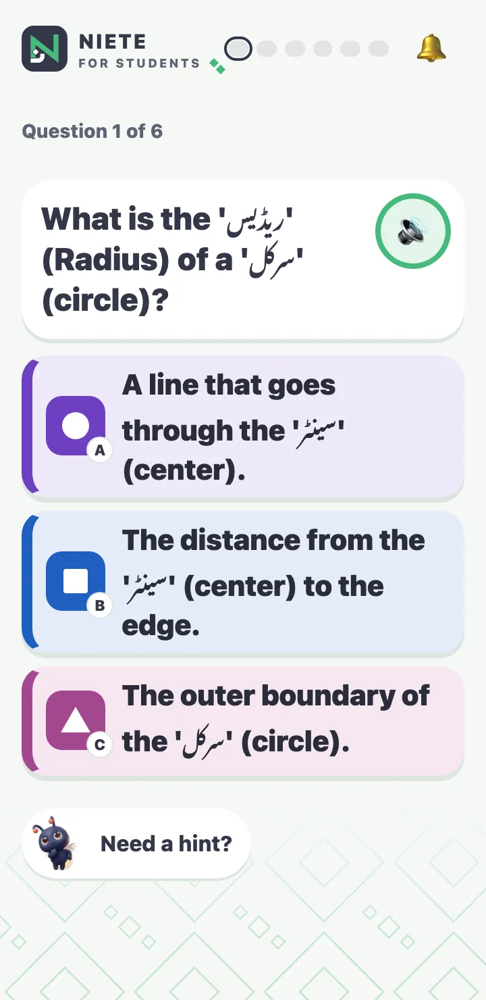
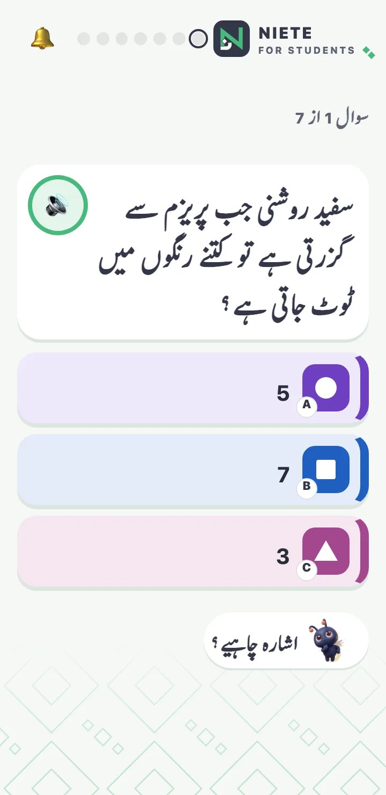
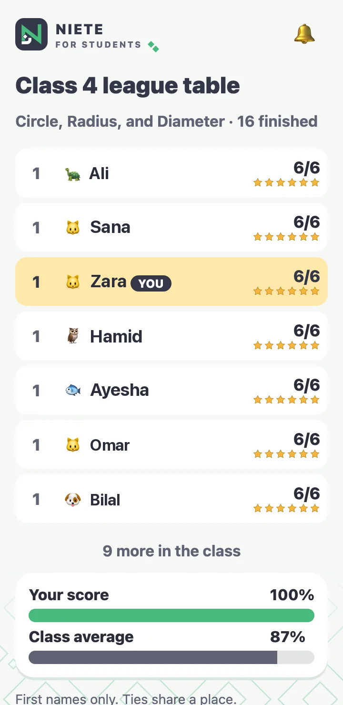
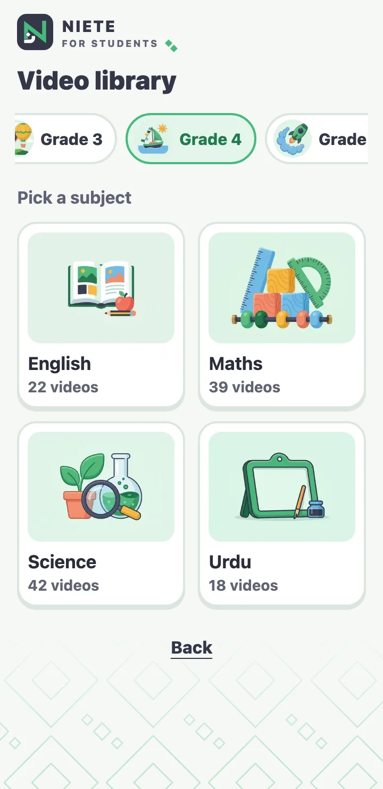
11,801 children have started a quiz since 6 September1,796 teachers have got a class link for a quiz 8 children played Jugnu’s Challenge on day oneData to 8 October 2026, 23:59 Pakistan time (18:59 UTC)
The quiz first ran inside the WhatsApp chat. A question was a message, every answer was a reply, and the feedback, the scorecard and the offers after it were more messages: about 46 for one finished quiz. Through September that cost nothing: replies a business sends inside a conversation the person has started were free.
On 1 October that changed. Meta now gives each number 1,000 free replies a month and charges for the rest; in Pakistan it is US$0.015 a message. A number like NIETE’s uses the free thousand within the first day of the month. At that rate the chat quiz costs about 67 cents for every finished quiz.
A quiz does not need the chat: the same link opens a web page in one tap. So the link still travels the way it always did, from teacher to class group to a family phone, and everything after the tap happens in a page that sends no messages. All in, a finished quiz on the page costs two to four cents; the recorded voices and the one message that carries the link are nine-tenths of that.
Until 6 October
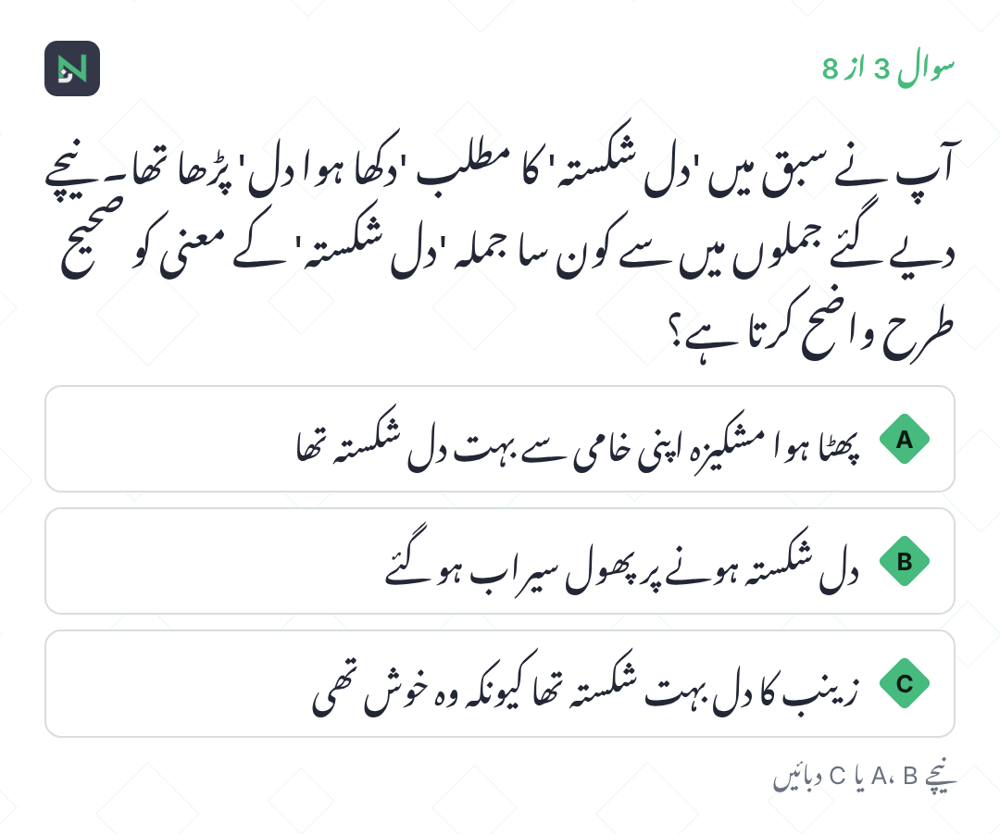
سوال اوپر تصویر میں ہے۔ A، B یا C دبائیں۔
2:23 pmB
2:23 pm ✓✓✅ بہت خوب! اس جملے میں 'دل شکستہ' کا مطلب 'دکھا ہوا دل' صاف ظاہر ہو رہا ہے، جیسے مشکیزہ اپنی خامی کی وجہ سے اداس تھا۔
2:23 pmFrom 7 October
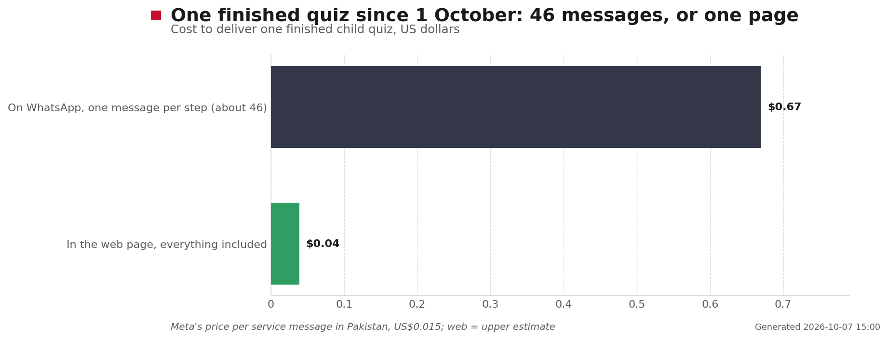
Saving the messages was the reason. What the page opened up is the rest of this story.
These are the real screens, taken on our test copy of the service. Every name on them is invented.
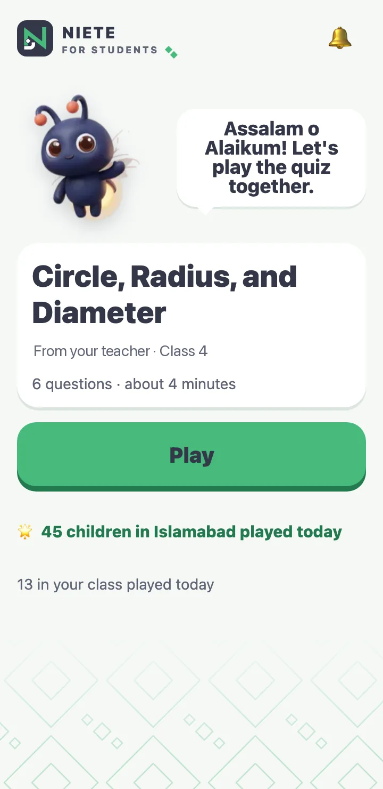
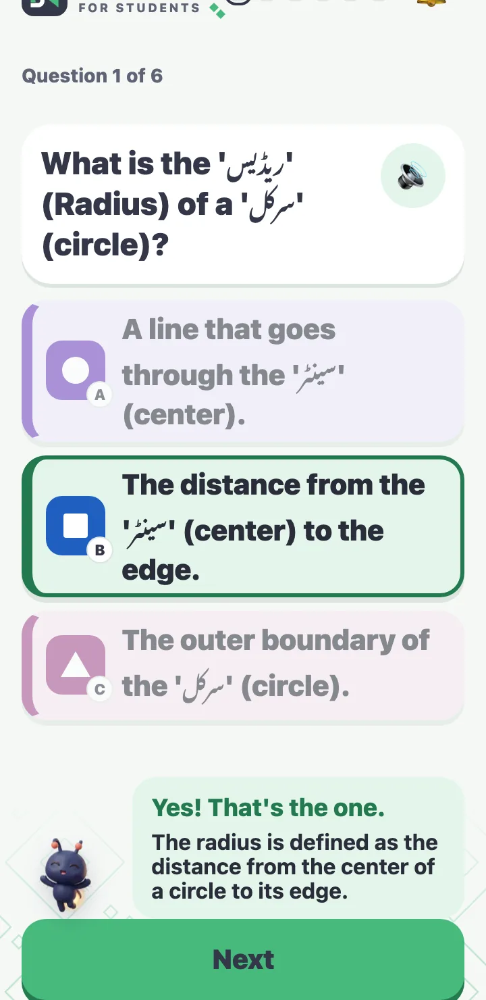
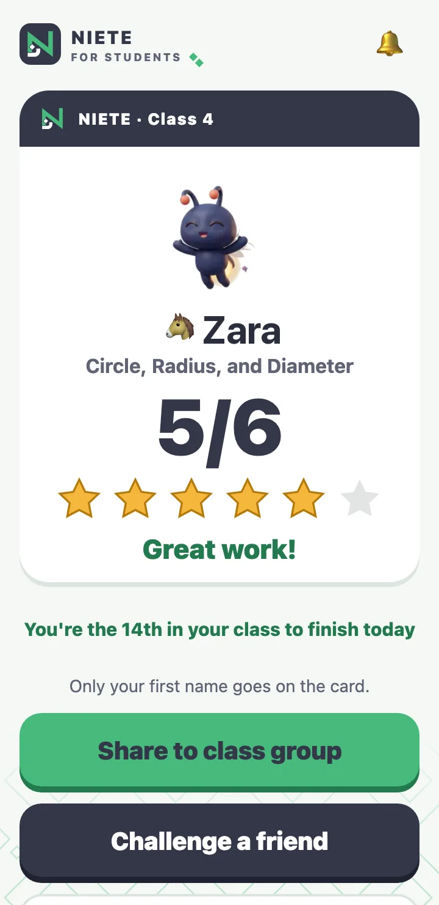
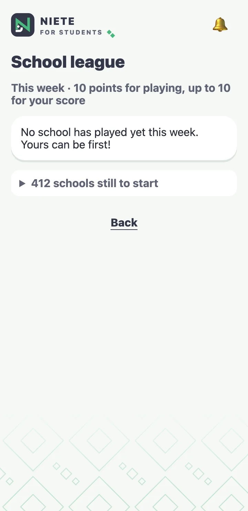
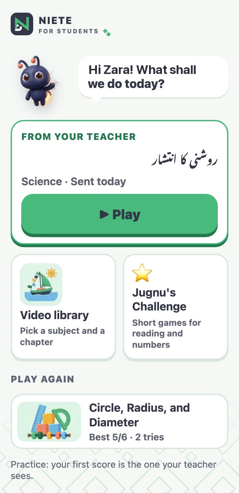
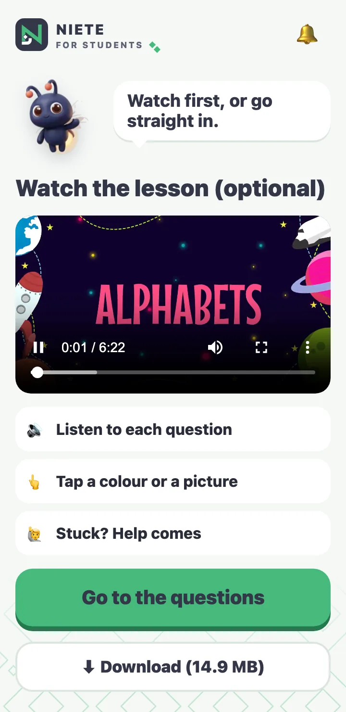
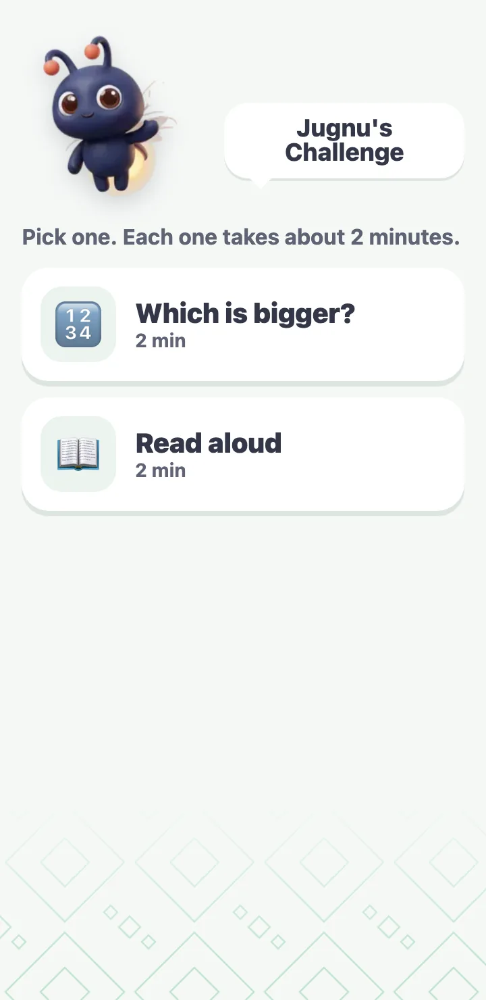
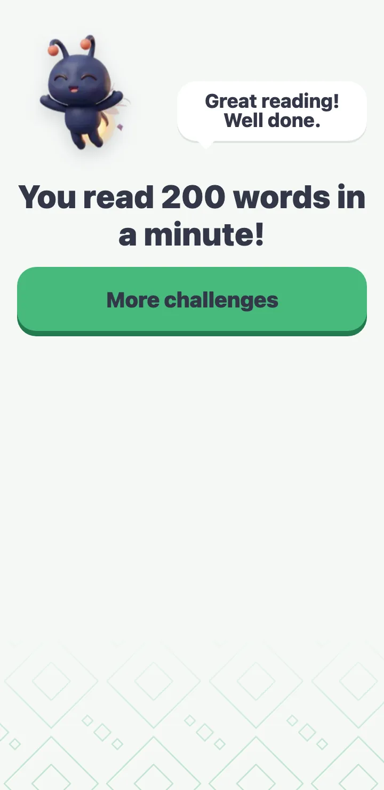
The page went live for every teacher at 03:08 on 7 October, Pakistan time. The numbers here run from then to 23:59 on 8 October and count real children only: the checks our own team ran on the live service are taken out. The service changed along the way, all times Pakistan time:
| Each day, Pakistan time | 7 Oct | 8 Oct to 23:59 |
|---|---|---|
| Children on the page | 994 | 1,495 |
| Quizzes started on the page | 1,490 | 2,220 |
| … finished | 1,115 (75%) | 1,589 (72%) |
| Chat sittings on old links | 731 | 38 |
Links sent before the switch still open the old way, and those chat sittings are dwindling as the old links age. Since 22:03 on 7 October an old link answers with one button that opens the quiz on the page; the button has been sent 281 times by 23:59. 2,083 of the web sittings were in English and 1,627 in Urdu. 627 of the 2,389 children were matched to their class’s list, so their results land against the right name in the teacher’s register.
Of the 3,722 page opens that carry a browser signature, 59 name WhatsApp’s own browser; the rest opened in the phone’s own browser (Chrome on most phones), which is where a link forwarded in a class group opens. So the quiz is one tap from WhatsApp, not inside it.
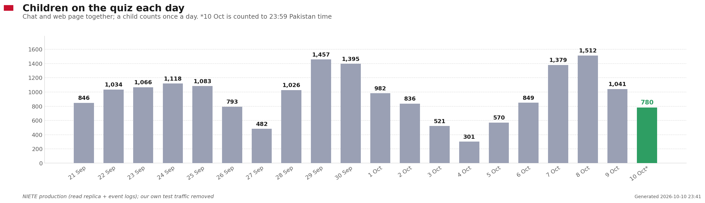
Since the library opened at 12:28 on 7 October, children have looked at 11,192 library screens, picked 1,268 videos, saved 506 to the phone and started 517 quizzes from a video they picked themselves.
Children tapped a share button 5,906 times: 3,982 from the scorecard, 889 from the class league, 957 to challenge a friend and 78 from the school league. 2,480 friend challenges were made, and 51 quizzes have been played through one.
The hub opened 485 times; since the door on the scorecard went live at 19:38 on 7 October, children tapped it 396 times. The hub is also the way into Jugnu’s Challenge, next.
Jugnu’s Challenge is three short practice games for grades 2 to 5, reached from the hub: Which is bigger? (ten pairs of numbers), Read aloud (a passage read for one minute, words lighting up as the child reads, then questions on it) and Listen and answer (a story read to the child, then questions). The games opened at 12:39 on 7 October; the version described here, with the live reading, the questions and the listening game, went on at 19:38 that evening. So “day one” here runs from 7 Oct 19:38 to 23:59 on 8 October (Pakistan time), and 8 October is its first full school day.
Questions, after a reading and in the listening game together: 11 of 15 answers right (73%). Split by game, each count comes from fewer than 5 children.
6 readings from 4 children have been scored so far (1 more child began a reading that was not finished). That is too few to report a typical WCPM. Fewer than 5 children have read a passage aloud in each language, and a median from so few readings would describe those children, not the programme. The number is computed and stored for every reading; it goes on this page once at least 5 children have read in a language.
“Started” counts each time a game was opened, so a child who opens a game twice counts twice and the finished share is a floor. 7 Oct 20:00, 7 Oct 22:00, 7 Oct 23:00, 8 Oct 14:00, 8 Oct 15:00, 8 Oct 21:00 are the hours (Pakistan time) in which a game was finished. The microphone was allowed 7 times and refused or failed 5 times; the reason for a refusal is not recorded yet. Our own checks of the live games are taken out.
Where the drop happens: a child reaches the games through the scorecard’s door to the hub, then the games tile, and the games are for grades 2 to 5 only. In these hours the hub was opened 479 times, the games menu 67 times, and 41 games were started. A WCPM from the page is practice, not an assessment: nobody checks who is reading, and a child can read the same passage again.
From here the page covers the whole run, from the first quiz on 6 September to 23:59 on 8 October, chat and web page together. The earlier page, with how the chat quiz worked, mastery by objective and one child’s journey replayed, is kept here as it stood on 2 October.
This is the one place on the page for who is new and who came back. The definitions:
| Week | Active | New | Back | New share |
|---|---|---|---|---|
| 6–13 Sep | 672 | 646 | 26 | 96% new |
| 14–20 Sep | 583 | 328 | 255 | 56% new |
| 21–27 Sep | 705 | 361 | 344 | 51% new |
| 28 Sep – 4 Oct | 724 | 316 | 408 | 44% new |
| 5–8 Oct (so far) | 382 | 103 | 279 | 27% new |
| Web days, 7–8 Oct | 251 | 56 | 195 | 22% new |
| 8 Oct, to 23:59 | 153 | 35 | 118 | 23% new |
| Week | Active | New | Back | New share |
|---|---|---|---|---|
| 6–13 Sep | 2,874 | 2,732 | 142 | 95% new |
| 14–20 Sep | 3,465 | 2,108 | 1,357 | 61% new |
| 21–27 Sep | 4,105 | 2,180 | 1,925 | 53% new |
| 28 Sep – 4 Oct | 4,005 | 1,804 | 2,201 | 45% new |
| 5–8 Oct (so far) | 3,881 | 2,763 | 1,118 | 71% new |
| Web days, 7–8 Oct | 2,777 | 2,476 | 301 | 89% new |
| 8 Oct, to 23:59 | 1,513 | 1,396 | 117 | 92% new |
Among teachers, the share sending a quiz for the first time fell week by week, from 96% in the first week; returning teachers first outnumbered new ones in the week of 28 Sep – 4 Oct (56% returning), and 73% in 5–8 Oct (so far). In the web days, 78% of the 251 teachers whose class link went out had sent one before.
Children are where the switch blurs the count. A child on the chat is known by the family phone; a child on the web page is known by the page’s own record, made the first time they say who is playing. The two cannot yet be joined, so a child who played in September and now plays on the page counts as new. Of the 2,777 children since 7 October, 2,389 are page records and 100 of those played on the page on more than one day. A separate check that matched page children to chat children under the same teacher found 14–24% of page children had played on the chat before, so the true “new” share of children since 7 October is lower than the table shows. Until the two records can be joined, the weeks before 7 October are the clean read.
Two funnels, because they count different things: the first counts teachers, the second children. Each bar shows how many got that far, from 6 September to 23:59 on 8 October, and the share of the step before that went on.
How each step is counted: offered = the quiz offer after a coaching report, or the lesson-plan quiz offer, was sent to the teacher; said yes = the teacher accepted that offer; got the quiz = the quiz was written and its class link sent to the teacher; a child opened it = a child started that quiz. Counted in quizzes instead: 18,473 offers (14,301 after coaching, 4,172 with a lesson plan), 4,333 yeses, 3,930 quizzes delivered and 2,049 opened by a child. A quiz a teacher asks for through /quiz, without an offer, is not in this funnel. What it cannot see: whether a teacher forwarded the link; a quiz forwarded but never tapped looks the same as one never forwarded. “Opened” is a floor.
What it cannot see: a child on both the chat and the page is two children here. A video watched without its quiz is not counted (the page records the tap, not who tapped). Sharing the scorecard to the class group is the most common share (3,982 taps on the page since 7 October) and cannot be tied to a child, so “challenged a friend” is the only sharing a child can be counted for. A friend who arrived through a scorecard picture is not counted as joining.
Since the first quiz went out on 6 September, 11,801 children have started at least one quiz, from the classes of 1,796 teachers who got a class link for at least one quiz. Who is new and who came back is in “New and returning” above; this section is about where they are.
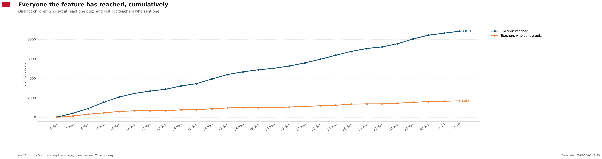
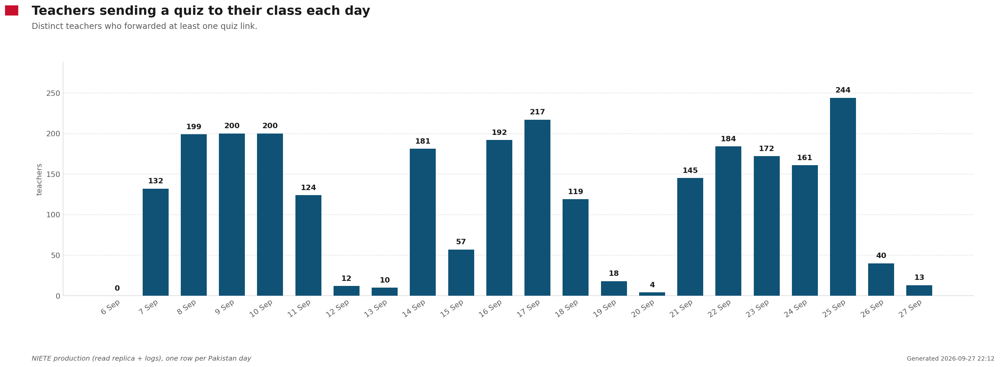
Every teacher belongs to a school, and every ICT school to one of six sectors, so both the teachers and the children can be placed. Across the six, 24.5% of the 6,602 teachers on the roll have had a class link for at least one quiz, from 323 of the 433 schools. Sihala leads on penetration (32.7% of its teachers); Urban-I carries the most children (5,408) because it is the biggest sector. Mastery barely moves between them — Urban-I at 75.3%, Urban-II at 69.8% — which is the point: the quiz is written from the lesson, and the lessons are the same curriculum everywhere.
The map also opens on its own page. Press Play the rollout to watch it spread day by day from 6 September, or keep the film: light · dark.
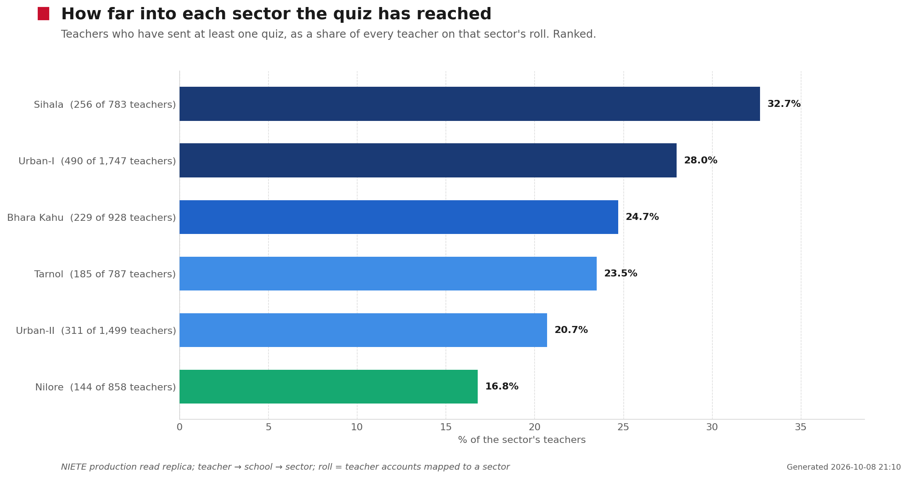
| Sector, ranked | Penetration | Teachers with a class link | Schools reached | Children | Quizzes finished | Objectives mastered |
|---|---|---|---|---|---|---|
| 1. Sihala | 32.7% | 256 of 783 | 62 of 79 | 1,540 | 4,552 | 74.7% |
| 2. Urban-I | 28.0% | 490 of 1,747 | 52 of 74 | 5,408 | 17,557 | 75.3% |
| 3. Bhara Kahu | 24.7% | 229 of 928 | 62 of 85 | 742 | 1,872 | 71.9% |
| 4. Tarnol | 23.5% | 185 of 787 | 50 of 61 | 673 | 1,993 | 72.6% |
| 5. Urban-II | 20.7% | 311 of 1,499 | 46 of 67 | 2,625 | 6,115 | 69.8% |
| 6. Nilore | 16.8% | 144 of 858 | 51 of 67 | 540 | 1,285 | 72.2% |
| All six sectors | 24.5% | 1,615 of 6,602 | 323 of 433 | 11,528 | 33,374 | |
| Not mapped to a sector | — | 181 | — | 691 | 1,333 | 72.5% |
The roll is every teacher account that maps to a sector through its school record — 6,602 teachers, in line with the ICT sheet. 1,615 of the 1,796 teachers with a class link map that way; the rest have no school on file. A child who sat quizzes from teachers in two sectors is counted in both, so the column can sum to slightly more than the distinct total above. A friend who arrived by another child's invite is placed with that child's teacher.
3,208 children have finished a quiz and then sat that same quiz again — 27% of everyone reached, across 8,572 repeat sittings. It happens every day, weekends included. The class report and the class card count each child once, using their latest attempt, so a child who repeats a quiz to improve is ranked on the result they ended with.
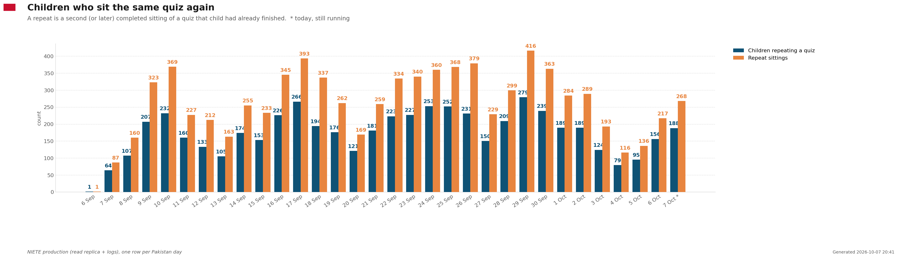